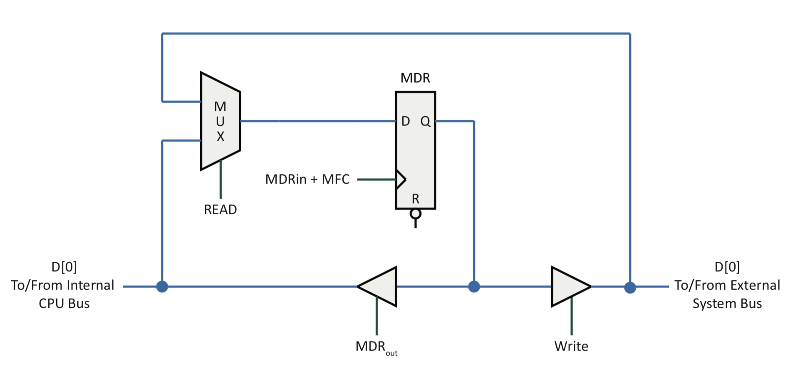

Note the signals involved in Memory Interface operations:
Clock enable signals (MDR_{in}, MAR_{in})
Tri-state enable signals (MDR_{out})
Direction control signals (READ, WRITE)
Acknowledgement signals (MFC)
What does WMFC do?
Wait for Memory Fetch/Flow Complete
Some of these signals may be virtual signals. For example, the MFC logically exists but may not physically exist in all designs.
MDR Bus Connections
structure-mdr-connections
Interfacing a CPU with Memory
Which entity generates these signals?
MAR_{in}?
MDR_{in}?
MDR_{out}?
READ?
WRITE?
MFC?
How can the clocks be synchronized, if at all?
How is the MFC signal used?
When doing a read, when is a data value returned by the memory?
Timing Interactions
A CPU and memory often differ significantly in performance
In the previous example, a factor of 5 performance difference existed assuming the nominal 50 ns access time for memory
During a normal read operation, the CPU asserts the address value causing the memory to eventually respond with the corresponding data value
Synchronous Option
Consider a situation where a memory requires 6 clock periods to respond to a CPU’s request to read data
Using a synchronous option, the CPU would assume that data is valid after 6 clock periods
The CPU indicates the start of a new memory operation using a synchronization pulse
Memory must provide valid data prior to the end of the 6th clock period
Asynchronous Option
Consider a situation where a memory requires 6 clock periods to respond to a CPU’s request to read data
Using an asynchronous option, the CPU and memory would exchange timing synchronization signals
The CPU indicates the start of a new memory operation using a synchronization pulse
The memory responds to the CPU with a synchronization pulse when data is valid
Connecting to Two or More Memory Devices
Consider the design challenge of connecting two different memory devices to a CPU:
If synchronous, how does the CPU know how long to wait for memory to respond?
How do the shared data and control lines avoid conflicts
In earlier designs you had to be aware of the order you connected the 2 memories to the CPU in, otherwise more often than not you would get significantly worse performance because the CPI relied on memory 1 being faster than memory 2
The Challenge of Sharing a Bus Line
Consider the circuit shown below where the outputs of two AND gates are directly connected and fed into an input of a third AND gate:
- What would happen if i_1 =1, i_2 =1, i_3 =0 and i_4 =0?
- How must the circuit be redesigned to safely and reliably share the bus line?
Sharing a Bus Line
To share a bus line, the following steps are typically taken:
Uniquely select at most one output driver to output at a time
⇒ Use addressing, arbitration, or time-multiplexing to select one driver
Connect the output drivers such that conflicts do not result in large current flows
⇒ Use resistances to limit current
Types of Output Drivers
Totem pole output drivers are used by all digital logic gates, unless otherwise stated:
A totem pole output is capable of actively driving a value of 1 or 0
Totem pole outputs are not capable of a high impedance state so these outputs are not suitable for bus sharing
Open-collector output drivers are denoted by the letters o/c on a gate:
An open collector output driver is capable of actively driving a value of 0
When not driving a value of 0, the output driver is in a high impedance state
A high impedance state can be passively driven to a value of 1 using a pull-up resistor tied to a voltage supply
Tri-state output drivers are denoted by the presence of an enable signal on a gate:
A tri-state output driver can actively drive a value of 1 or 0 when enabled
When not enabled, the output driver is in a high impedance state
Tri-state output drivers are ideal for bus sharing
Other types of output drivers (open-emitter, open-drain, open-source, etc.) exist but are used less often
Sourcing and Sinking Current
Output drivers source and sink current to change the voltage on a bus line:
When sourcing current, the output driver connects a voltage source
When sinking current, the output driver connects to a voltage sink
When in a high impedance state, no connection to a voltage source or voltage sink exists
Simplified Transistor Theory - BJT Inverter Circuit
A simplified model of a BJT working as a digital switch to implement an inverter is shown below:
Simplified Transistor Theory - nMOS Inverter Circuit
A simplified model of a nMOS transistor working as a digital switch to implement an inverter is shown below:
structure-nmos-transistor
Simplified Transistor Theory - pMOS Inverter Circuit
structure-pmos-transistor
Simplified Transistor Theory - CMOS Inverter Circuit
A simplified model of a CMOS inverter is shown below:
Totem Pole Output Driver
Totem pole output drivers actively drive either a value of 1 or 0 onto a bus line
\begin{aligned}
\text{i} &\;\;\;\;\text{o} \\
\;\;\;\;\;1&\;\;\;\;1\\
\;\;\;\;\;0&\;\;\;\;0\\
\end{aligned}
Two Input AND Gate with a Totem Pole Output Driver
Consider the following conceptual design of a two input AND Gate with a totem-pole output driver consisting of BJTs:
A Totem Pole Bus Conflict
The following circuit illustrates why two totem pole output drivers cannot share a bus line:
Approaches to Avoiding Large Current Flows
Logic must be designed to prevent active connections to both the power supply voltage and the ground reference at the same time
This can be achieved in two different ways:
Permanently –
Use a passive pull-up resistor or a passive pull-down resistor to limit the current flow
in all possible paths
Temporarily –
Disable a device by turning off all of its transistor-controlled connections to the power
supply voltage and the ground reference
Open-Collector Output Driver
The output of Z represents a high-impedance state
\begin{aligned}
\text{i} &\;\;\;\;\text{o} \\
\;\;\;\;\;1&\;\;\;\;Z\\
\;\;\;\;\;0&\;\;\;\;0\\
\end{aligned}
An output of high impedance can be pulled high using a passive pull- up resistor tied to the power supply voltage or pulled low using a passive pull-down resistor tied to the ground reference
Bus Terminology
Address propagation delay (t_{PA}): The time for the address to propagate from the bus master to all of the potential slaves.
Data propagation delay (t_{PD}): The time for the data to propagate from the data source to all of the potential data receivers.
Bus Propagation delay (t_{P} ): The maximum of the propagation delays for all bus signals. t_P = Maximum propagation delay for all signals
= Max(t_{PA},t_{PD})
Setup Time (t_{Setup}): The minimum time that a signal has to be available at the input to the buffer before the active clock edge arrives. Specified at the slave for a write and at the master for a read.
Hold Time (t_{Hold}): The minimum time that data has to be held stable after the clock edge that triggers the transfer. Specified at the slave during a write and at the master during a read.
Select Time (t_S or t_{Select}): The time required for a device interface attached to a bus to detect that the current transfer involves the device interface. This does not include the time required by the device interface to perform register selection.
Access Time (t_{Access}): The time required for the device interface to access the requested information after the device interface has been selected.
Store Time (t_{Store}): The time required for the device interface to capture and store data after the device interface has been selected.
Skew Time (t_{Skew}): The maximum difference in signal propagation times. Although
various sets of signals could have different values of skew time (e.g., the address bus signals or the data bus signals), the largest measure of skew is used. A more general definition (from the JEDEC dictionary) would be the magnitude of the difference between two events that ideally would occur simultaneously. This definition allows for skew on a single signal with multiple endpoints.
Margin Time: The time reserved to allow for unexpected variations in performance. Some examples of margin time include t_{M1} (or t_{Margin1}) and t_{M2} (or t_{Margin2}). A margin time is an amount of extra time that a designer includes to ensure reliable operation.